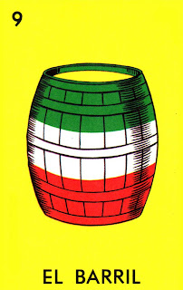

"El barril es quintaleño, el barril del mezcal."

"The Barril card in Lotería symbolizes celebration and abundance. Depicted as a barrel, often associated with storing liquids like wine or beer, it represents the spirit of gathering and enjoying life's pleasures. In Mexican culture, the barril is a symbol of festivity, often seen at celebrations where drinks flow freely, marking moments of joy and community."
Regresar